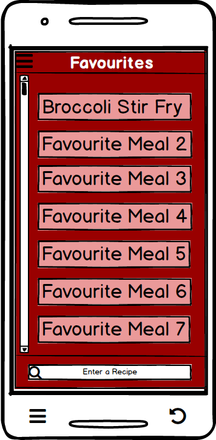
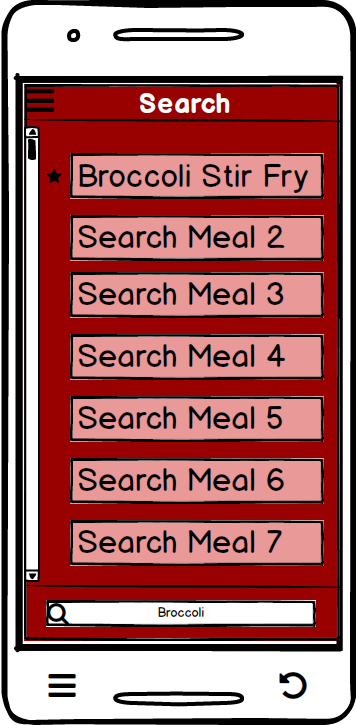
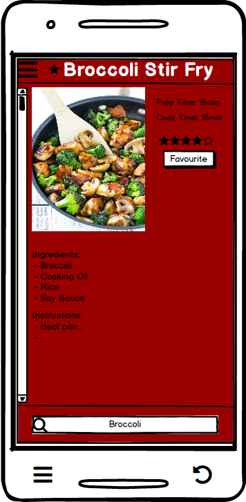

Recipe Planner

Requirements
Description: The product will be mobile friendly. Either using an app for Android/iOS, or a mobile friendly website.
RecipeFinder will be built as a mobile application on the android platform.
Description: App will feature a menu-driven interface with icons to represent their function. Every major feature will be accessible via an icon on a taskbar, available on every screen. Each main feature will support its own set of distinct menus. There should be no menu within a main feature that takes the user to another main feature.
Our design includes a taskbar available on the top left corner of every screen in this application. This taskbar will show all major features outlined in this application, each with their own distinct icons. These main features include Create Meal Plan, Generate Recipe, Favorite Recipes, Polls, and Profile. Other smaller features can be accessed inside the main features as seen in the interfaces.
Description: Recipes can be individually searched via a series of menus, or by text input.
RecipeFinder will include a search bar located at the very bottom center of every screen. This search bar can be used by inputing an ingredient, or an entire recipe.
Description: Keep track of personal personal health stats for the user. The application will be able to calculate their recommended daily calorie intake and track track it.
From the User Profile Home, the user can go to Nutrtitional Recommendations to view personal health stats. These include recommended daily calorie intake, amount of total nutrients and calories consumed throughout the day, and a legend to give the user feedback on the amount of food and what they are eating.
Description: Voting feature that will allow other users of the app to vote on their preferred meal. One user selects a range of meals, and puts it to a vote. The results are available to the user who initiated the vote.
The Polls mockups feature this exact requirement. The logged in user can add a poll and publish it and only they can see the results. In addition, this user can also search for vote in public polls, but these results are restricted to the user who created that poll.
Description: Recipes can be favourited by the user. Favourited recipes will be at the top of applicable search suggestions, and a separate favourites page will display them.
All recipes contain a 'Favourite' button which places the recipe in the users 'Favourites' menu. As well, when the user searchs a recipe which is similar to a recipe that the user has favourited before, the recipe appears at the top with a star next to it
Home


- Home Screen Mockups
- Home screen for an already logged in user. This application allows BOTH first time and recurring users easy and effective accessebility.
- Pressed taskbar that is accessible from any page in the application.
User Profile


- Personal user information only accessible by the logged in user.
- The user can also edit their profile to allow the application to provide user-related information such as recommended recipes and nutritional information.
Polls


- Main menu screen for Polls. The user can either Add Poll, Search, or go to Your Polls.
- The user has the ability to add their own polls with an unlimited amount of options for others to vote in. They have the option of writing a description as well. The user can press publish once they are done.
- The user who made the poll can view the results in real time. These results will be placed in a descreasing popularity order and each result will be shown as a percentage.
- The user has the option to view all past polls they have published and the date they did so.
- Once the user presses on one of thier past polls, they can also see the results of that poll. (Similar to right when they publish it after adding a new poll)
- The user can either search for a public poll using the text input shown or they can search by popularity, data, or specific categories.
- The results shown will depict the most recent polls at the top showing the date it was created as well. Note that the user cannot view results since they did not create the poll.
- However, the user can vote on any public polls. They can press on one option to make it checked. Hitting submit will confirm their vote and move them back to the previous screen.
Generate Weekly Meal Plans


Favourites
- 
- 
- 